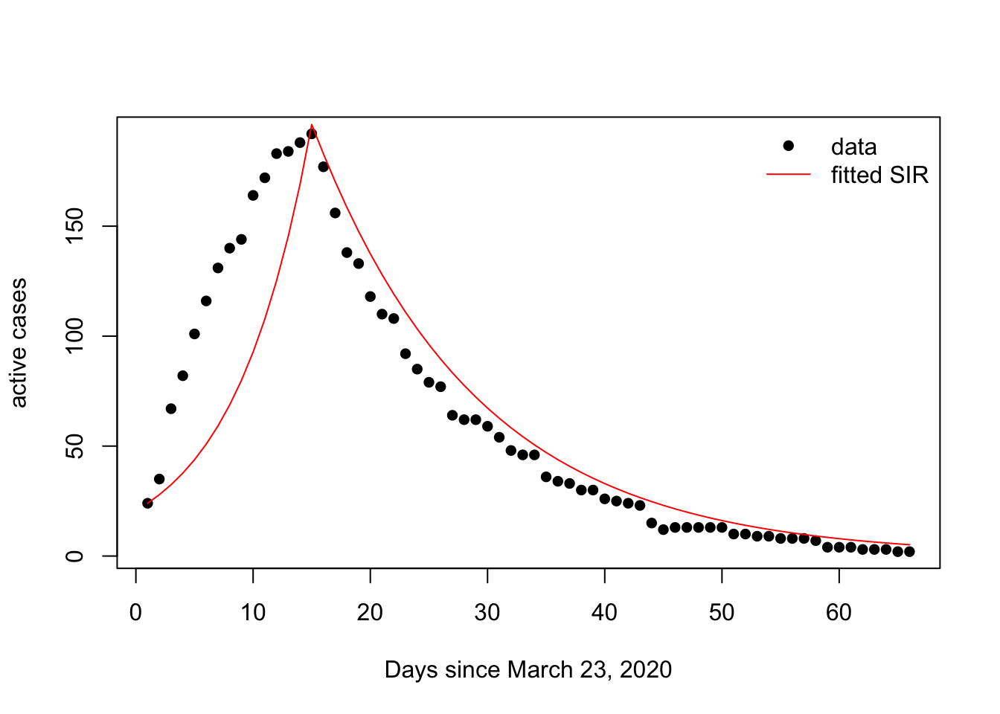

13 A7. Tues Mar 2: Parameter estimation
Assignment 7: to be handed in to Brightspace on Tues Mar 9 by 2pm.
13.1 Parameterizing exponentially distributed rates
For ordinary differential equation models, frequently the model formulation implies that events happen to the individuals in the population following an exponential distribution.
Consider the rate of recovery for individuals that are infected in an SIR model. The equation for the rate of change in the number of infected individuals, \(I(t)\), is:
\[\begin{equation} \frac{dI(t)}{dt} = \beta S(t) I(t) - (v+\gamma)I(t) \end{equation}\]where \(\beta\) is the transmission coefficient, \(S(t)\) is the number of individuals susceptible to the disease, \(v\) is the disease-induced mortality rate and \(\gamma\) is the recovery rate. If we consider only a cohort of individuals that are already infected, and will recover, \(C(t)\), then in keeping with the model above, our model for the fraction of individuals in the cohort that have not yet recovered is:
\[\begin{equation} \frac{dC(t)}{dt} = - \gamma C(t), \end{equation}\]with \(C(0) = 1\) and where \(\gamma\) is the same parameter that appears in the \(\frac{dI(t)}{dt}\) equation. We can solve the \(\frac{dC(t)}{dt}\) equation to find that the ordinary differential equation formulation of the SIR model implies that the fraction of individuals that have recovered by any time, \(t\), is,
\[\begin{equation} C(t) = \exp(-\gamma t). \end{equation}\]Note that \(1-C(t)\) is the cumulative fraction of the cohort that have recovered at time, \(t\). The probability, \(c(t)\), that an individual in the cohort recovers during the time interval \([t, t+\Delta t]\) is the probability density corresponding to \(C(t)\), which is,
\[\begin{equation} c(t) = \gamma \exp(-\gamma t). \end{equation}\]Note that for an exponentially distributed random variable, where \(\lambda\) is the rate at which the exponential process occurs, the mean time until the event happens is \(1/ \lambda\) (i.e., see Wikipedia). As such, the mean time to recovery, implied by our SIR model, is \(1/ \gamma\), and so if we can read about our disease of interest and find the mean time to recovery (i.e. WebMD* states that the flu usually lasts 5 days and a cold 7-10 days), then we can simply parameterize the recovery rates as the inverses (i.e., \(\gamma\) = 1/5 for the flu and \(\gamma \in [\frac{1}{10}, \frac{1}{7}]\) for a cold). Note that the mean time until the event happens would have units of days, which is reassuring since \(\gamma\) was a rate and would have units 1/days.
*please use non-peer reviewed websites such as WebMD only as a last resort for you final project; for you final project I would perfer citations to the published literature.
Note that while this example was for an epidemiological model, if you were modelling the rate that customers leave a store, and your model formulation was similar, you could parameterize the leaving rate as the reciporcal of the average time spent in the store.
13.2 Estimating parameters through model fitting
Some parameters, such as the transmission coefficient, \(\beta\), for an SIR model, are notoriously difficult to estimate from independent data sources. We can also estimate parameters by fitting to data, particularly when most other parameters can be estimated from independent sources. Consider, the COVID-19 outbreak in St. John's in March 2020. We can fit an SIR model to these data. Let the change in the number of actively infected individuals, \(I(t)\), be,
\[\begin{eqnarray} \frac{dS(t){dt} &=& - \beta I(t)\frac{S(t)}{N} \\ \frac{dI(t)}{dt} &=& \beta I(t)\frac{S(t)}{N} - \gamma I(t), \end{eqnarray}\]where \(\gamma\) is the recovery rate and Newfoundland and Labrador typically declares a recovery 14 days after infection such that \(\gamma = 1/14\) days\(^{-1}\).
require(deSolve)## Loading required package: deSolveactive.cases <- c(24,35,67,82,101,116,131,140,144,164,172,183,184,188,192,177,156,138,133,118,110,108,92, 85, 79, 77, 64, 62, 62, 59, 54, 48, 46, 46, 36, 34, 33, 30, 30, 26, 25, 24, 23, 15, 12, 13, 13, 13, 13, 13, 10, 10, 9, 9, 8, 8, 8, 7, 4, 4, 4, 3, 3, 3, 2, 2)
times <- seq(1,length(active.cases))
t.hat <- times[which(active.cases == max(active.cases))]
N <- 500000
I0 <- active.cases[1]
beta1 <- 0.2
beta2 <- 0.01
gamma <- 1/14
beta.fun = function(t){
if(t<=t.hat){
betaval <- beta1
}
else {
betaval <- beta2
}
return(betaval)
}
# Define the system of coupled ODEs for the Miller et al. model
SIR = function(t,y,parms){
S <- y[1]
I <- y[2]
dS = -beta.fun(t)*I*S
dI = beta.fun(t)*I*S - gamma*I
return(list(c(dS,dI)))
}
# SIR model
yini = c(S = 1-I0/N, I = I0/N)
out <- ode(y = yini, parms = NULL, times = times, func = SIR)
out <- data.frame(out)
plot(times, active.cases, pch = 16, ylab = "active cases")
lines(times, out$I*N, typ = "l", col = "red")
Questions A6-1
- Read all the text above. Revisit Disease and healthcare burden of COVID-19 in the United States. For the system of ordinary differential equations that appear in the methods section at the end of the paper choose 2 parameters. Spend 30 minutes following the citations to find the source for how the parameters were estimated. Write 1 paragraph describing if you were able to find a sentence or figure that underpins the estimates of 2 parameters that you chose.